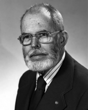

Please note: the AAS Obituaries are temporarily being hosted on this website while their full content is being ingested into the PubPub publishing platform newly adopted by the Bulletin of the American Astronomical Society. When the migration is complete, your existing links will take you to the final, migrated content. Contact peter.williams@aas.org with any questions.
James H. Trexler (1918-2005)
James H. "Trex" Trexler, Naval Center for Space Technology, a retired scientist and astronomer, with a 50-year career at NRL died of cancer on October 22, 2005, at the age of 87.
Born in Missoula, Montana (May 18, 1918), he grew up in Dallas, Texas, and attended Southern Methodist University (SMU) Engineering School. He combined his interests in astronomy and radio communication and operated the observatory on the SMU campus. Mr. Trexler had a most interesting and rewarding career at NRL, which resulted in notable contributions in scientific and technical developments.
While at SMU, he worked on a government-sponsored project on radio detection and tracking of meteors. This work resulted in a call from NRL in 1942 to join the Navy radio detection effort being mounted against the German submarine Wolf Packs that were harassing our North Atlantic convoys on the supply routes to our European Allies. The program proved highly successful causing the breakup of the German Pack operation, and resulted in the sinking and capturing of many U-boats.
After World War II, Trex and H. O. Lorenzen brought the German Navy's very advanced Wullenweber Direction Finder back to NRL, and rebuilt it at the Washington Coast Guard Station, south of Alexandria. It served as the prototype for the Direction Finder at the heart of the Navy and Air Force intercept networks and later as the first tracker of the Soviet Sputnik. He received the Navy Meritorious Civilian Service Award for his efforts.
In the late l940s, Trex built the radar intercept equipment for the Navy's P4M Airborne Cold War Ferret Program. This capability provided instantaneous frequency and direction of arrival against Soviet radars from high-altitude flights along the Soviet borders.
His Radio Physics Branch developed a surface mobile intercept system deployed to the Near East for which the Navy made the first group cash incentive award. With the beginning of the space age, his branch examined the moon as a possible passive radio relay satellite. Intercept of foreign radars was achieved in 1948, and this led to the large Stump Neck, Maryland Moon Propagation Facility, where voice transmission over the moon circuit was achieved in 1951.
Trex received the Navy's Distinguished Civilian Service Award for his intercept work at Stump Neck and the Chesapeake Bay Annex. An immediate outgrowth was the Navy's communication Moon Relay (CMR) system that provided our Navy with satellite communication a decade before the artificial satellites were operational. A demonstration of Doppler navigation using the moon as a navigation satellite was also carried out at this time.
The intercept aspects of the moon technology were pursued at the NRL Sugar Grove, West Virginia, facility from 1958 through 1986. Sugar Grove is now operated by the Navy as a first-class space radio facility. After his retirement, May 1, 1990, Trex continued his space interests. In 1997, he and his wife Fran took a special trip to the Fred Whipple Smithsonian Observatory area, Arizona, to capture some exciting photographs of the Hale-Bopp comet.
Trex served as president of the National Capital Astronomers Club in Washington, DC. Also, he was a member of the Tucson Amateur Astronomical Association, and the Sonora Astronomical Society of Green Valley. He served as a volunteer tour guide for the Smithsonian Whipple Observatory, the University of Arizona Mirror Lab and on the board of the Green Valley Community Church Foundation, an organization that awards college scholarships for general education to young people in southern Arizona.
Obituary written by: Ed Barker (NRL)
BAAS Citation: BAAS, 2007, 39, 1084
SAO/NASA ADS Bibcode: 2007BAAS...39.1084B